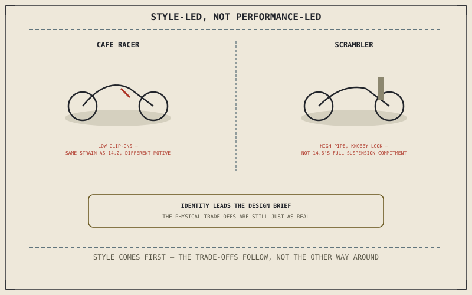

Chapters 14.2 through 14.6 each started from a hard engineering target — cornering, comfort, distance, terrain — and let styling follow from it. Cafe racers and scramblers largely run that process backward: a specific historical look comes first, and Chapter 13.1's identity motive, not a performance target, is what actually drives the design brief. The engineering trade-offs that result are real, but they're a consequence of chasing that look, not the reason for it.
Chapter 14.6 closed by pointing to exactly this shift: a category built around retro style and identity rather than the pavement-versus-terrain engineering this part has covered so far. This chapter is that category.
Cafe Racers: Stripped-Down, Low-Bar Aesthetic
A cafe racer's low clip-on bars visually evoke 1960s cafe-racing culture, and Chapter 13.4 already described exactly this kind of low, forward bar position as closing an ergonomic gap toward a specific riding feel. The strain that position produces is genuinely similar to Chapter 14.2's sportbike, but the motive behind it is different: a sportbike accepts that strain in service of front-tyre grip feedback at genuine lean angles, while a cafe racer accepts the identical physical cost largely for the period-correct silhouette itself.
Scramblers: Off-Road Style Without Full Off-Road Engineering
A scrambler borrows visual cues directly from Chapter 14.6's dirt bike — a high-mounted exhaust, aggressive-looking tyres, upright bars — without necessarily adopting the suspension travel or purpose-built lightness Chapter 14.6 described a genuine off-road-only machine committing to. The styling references off-road capability more than it fully delivers it, which is an honest, different thing from Chapter 14.5 or Chapter 14.6's engineering-first approach to the same visual territory.
A cafe racer's low bars and a scrambler's off-road styling carry real physical costs — strain, reduced suspension capability relative to the look they suggest — and those costs are genuine even though the motive behind them is identity rather than a hard performance target.

A diagram contrasting a cafe racer's low bars, styled after period racing but not chasing a cornering-performance target, and a scrambler's off-road-styled cues without a dirt bike's full suspension and weight commitment.
When Style-Driven Choices Still Carry Real Costs
Chapter 13.6 already showed that "purely cosmetic" rarely means a change has no physical consequence at all — a fairing change alters drag, a lightweight panel trades away durability. The same honest evaluation applies to a factory-built retro category just as much as to an aftermarket modification: a cafe racer's minimal bodywork sacrifices wind protection, and a scrambler's styling can leave suspension expectations mismatched to what the bike actually delivers off-road, exactly the kind of hidden consequence Chapter 13.6 warned a cosmetic decision can carry.
A Common Misconception, Cleared Up Early
It's a common assumption that a retro-styled category is somehow "fake" or engineering-irrelevant compared to the performance-first categories this part has otherwise covered. Chapter 13.1 already established identity as a legitimate modification motive, and the same legitimacy applies here: the honest distinction isn't that engineering stopped mattering once style led the design brief, it's that the design brief started from a look rather than a performance target — the physical trade-offs described in this chapter are exactly as real either way.
Where This Leads
Chapter 14.8 turns to electric motorcycles next, a category defined by a genuinely different kind of shift: not styling or terrain, but the powertrain itself.
Key Concepts to Remember
- A cafe racer's low bars impose sportbike-like strain in service of a period-correct look, not the front-tyre grip feedback a sportbike chases.
- A scrambler borrows off-road visual cues without necessarily adopting a dirt bike's suspension travel or purpose-built lightness.
- Identity-driven design carries real physical costs just as much as performance-driven design; only the starting motive differs.
Cross-References
| ← Ch. 13.1 | Established identity as a legitimate modification motive; this chapter treats a cafe racer or scrambler's entire design brief as an extension of that same motive. |
| ← Ch. 13.6 | Established that "purely cosmetic" rarely means no physical consequence; this chapter applies that same lesson to a factory-built retro category. |
| ← Ch. 14.6 | Established a dirt bike's genuine off-road commitment; this chapter contrasts a scrambler's borrowed styling against that full engineering commitment. |
| → Ch. 14.8 | Covers electric motorcycles, a genuinely different set of trade-offs. |